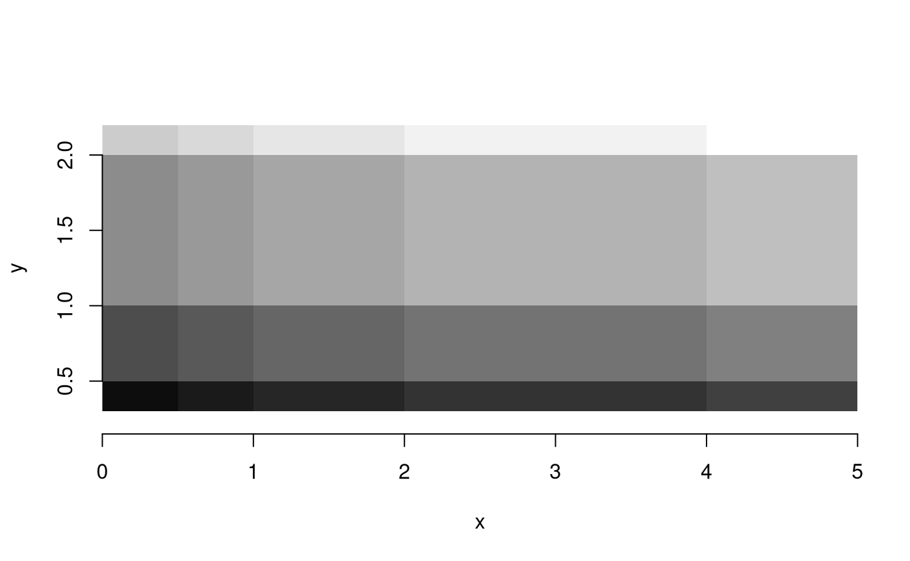
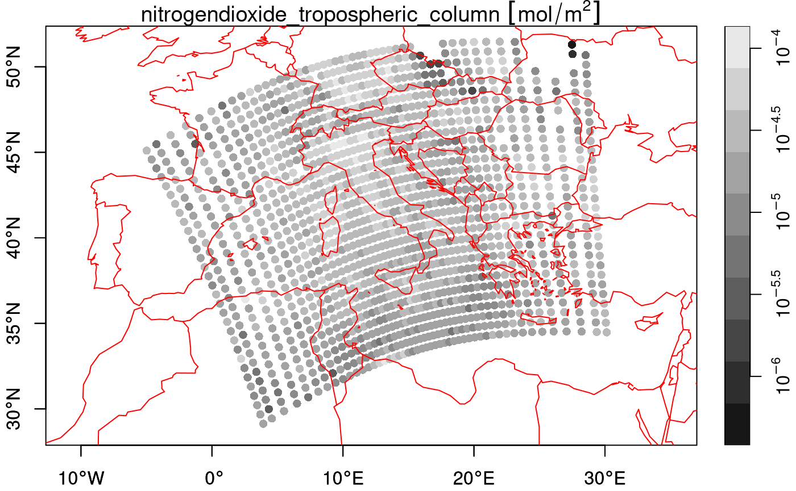
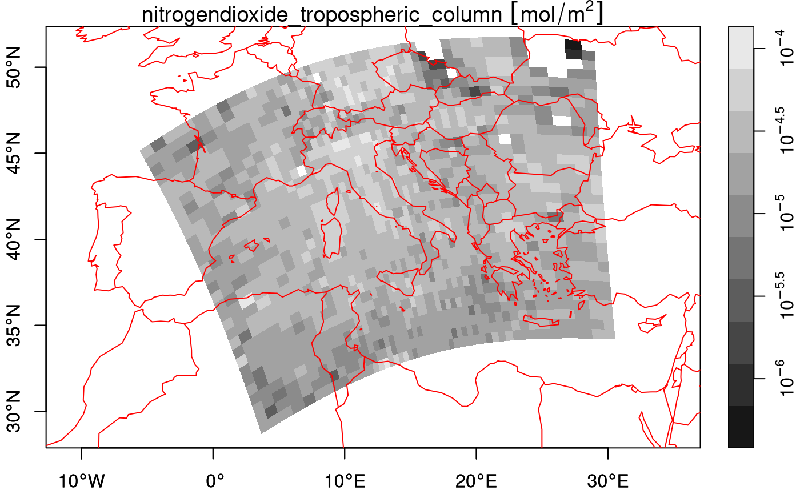

This vignette explains the data model of stars objects,
illustrated using artificial and real datasets.
Stars objects
stars objects consist of
- a (possibly empty) named list of arrays, each having named
dimensions (
dim) attribute - an attribute called
dimensionsof classdimensionsthat carries dimension metadata - a class name that includes
stars
A dimensions object is a named list of
dimension elements, each describing the semantics a
dimension of the data arrays (space, time, type etc). In addition to
that, a dimensions object has an attribute called
raster of class stars_raster, which is a named
list with three elements:
-
dimensionslength 2 character; the dimension names that constitute a spatial raster (or NA) -
affinelength 2 numeric; the two affine parameters of the geotransform (or NA) -
curvilineara boolean indicating whether a raster is a curvilinear raster (or NA)
The affine and curvilinear values are only
relevant in case of raster data, indicated by dimensions to
have non-NA values.
A dimension object describes a single
dimension; it is a list with named elements
-
from: (numeric length 1): the start index of the array -
to: (numeric length 1): the end index of the array -
offset: (numeric length 1): the start coordinate (or time) value of the first pixel (i.e., a pixel/cell boundary) -
delta: (numeric length 1): the increment, or cell size -
refsys: (character, orcrs): object describing the reference system; e.g. the PROJ string, or stringPOSIXctorPCICt(for 360 and 365 days/year calendars), or object of classcrs(containing both EPSG code and proj4string) -
point: (logical length 1): boolean indicating whether cells/pixels refer to areas/periods, or to points/instances (may be NA) -
values: one of-
NULL(missing), - a vector with coordinate values (numeric,
POSIXct,PCICt, orsfc), - an object of class
intervals(a list with two vectors,startandend, with interval start- and end-values), or - a matrix with longitudes or latitudes for all cells (in case of curvilinear grids)
-
from and to will usually be 1 and the
dimension size, but from may be larger than 1 in case a
sub-grid got was selected (or cropped).
offset and delta only apply to
regularly discretized dimensions, and are NA if
this is not the case. If they are NA, dimension values may
be held in the values field. Rectilinear and curvilinear
grids need grid values in values that can be either:
- for rectilinear grids: irregularly spaced coordinate values, or coordinate intervals of irregular width (a rectilinear grid can have one dimension that is regular),
- for curvilinear grids: or a matrix with grid cell centre values for all row/col combinations (usually in longitude or latitude).
Alternatively, values can contains a set of spatial
geometries encoded in an sfc vector (“list-column”), in
which case we have a vector data
cube.
Grid type
Regular grids
With a very simple file created from a matrix
suppressPackageStartupMessages(library(stars))
m = matrix(1:20, nrow = 5, ncol = 4)
dim(m) = c(x = 5, y = 4) # named dim
(s = st_as_stars(m))
## stars object with 2 dimensions and 1 attribute
## attribute(s):
## Min. 1st Qu. Median Mean 3rd Qu. Max.
## A1 1 5.75 10.5 10.5 15.25 20
## dimension(s):
## from to offset delta point x/y
## x 1 5 0 1 FALSE [x]
## y 1 4 0 1 FALSE [y]we see that
- the rows (5) are mapped to the first dimension, the x-coordinate
- the columns (4) are mapped to the second dimension, the y-coordinate
- the
fromandtofields of each dimension define a range that corresponds to the array dimension:
dim(s[[1]])
## x y
## 5 4- offset and delta specify how increasing row and column index maps to x and y coordinate values respectively.
When we plot this object, using the image method for
stars objects,
image(s, text_values = TRUE, axes = TRUE)
we see that is the origin of the grid (grid corner), and the coordinate value increase from one index (row, col) to the next. It means that consecutive matrix columns represent grid lines, going from south to north. Grids defined this way are regular: grid cell size is constant everywhere.
Many actual grid datasets have y coordinates (grid rows) going from
North to South (top to bottom); this is realised with a negative value
for delta. We see that the grid origin
did not change:

An example is the GeoTIFF carried in the package, which, as probably
all data sources read through GDAL, has a negative delta
for the y-coordinate:
tif = system.file("tif/L7_ETMs.tif", package = "stars")
st_dimensions(read_stars(tif))["y"]
## from to offset delta refsys point
## y 1 352 9120761 -28.5 SIRGAS 2000 / UTM zone 25S FALSERaster attributes, rotated and sheared grids
Dimension tables of stars objects carry a
raster attribute:
str(attr(st_dimensions(s), "raster"))
## List of 4
## $ affine : num [1:2] 0 0
## $ dimensions : chr [1:2] "x" "y"
## $ curvilinear: logi FALSE
## $ blocksizes : NULL
## - attr(*, "class")= chr "stars_raster"which is a list that holds
-
dimensions: character, the names of raster dimensions (if any), as opposed to e.g. spectral, temporal or other dimensions -
affine: numeric, the affine parameters -
curvilinear: a logical indicating whether the raster is curvilinear
These fields are needed at this level, because they describe
properties of the array at a higher level than individual dimensions do:
a pair of dimensions forms a raster, both affine and
curvilinear describe how x and y as a pair are
derived from grid indexes (see below) when this cannot be done on a
per-dimension basis.
With two affine parameters and , and coordinates are derived from (1-based) grid indexes and , grid offset values and , and grid cell sizes and by
Clearly, when , and are entirely derived from their respective index, offset and cellsize.
Note that for integer indexes, the coordinates are that of the starting edge of a grid cell; to get the grid cell center of the top left grid cell (in case of a negative ), use and .
We can rotate grids by setting and to a non-zero value:
attr(attr(s, "dimensions"), "raster")$affine = c(0.1, 0.1)
plot(st_as_sf(s, as_points = FALSE), axes = TRUE, nbreaks = 20)
The rotation angle, in degrees, is
atan2(0.1, 1) * 180 / pi
## [1] 5.710593Sheared grids are obtained when the two rotation coefficients, and , are unequal:
attr(attr(s, "dimensions"), "raster")$affine = c(0.1, 0.2)
plot(st_as_sf(s, as_points = FALSE), axes = TRUE, nbreaks = 20)
Now, the y-axis and x-axis have different rotation in degrees of respectively
Rectilinear grids
Rectilinear grids have orthogonal axes, but do not have congruent (equally sized and shaped) cells: each axis has its own irregular subdivision.
We can define a rectilinear grid by specifying the cell boundaries, meaning for every dimension we specify one more value than the dimension size:
x = c(0, 0.5, 1, 2, 4, 5) # 6 numbers: boundaries!
y = c(0.3, 0.5, 1, 2, 2.2) # 5 numbers: boundaries!
(r = st_as_stars(list(m = m), dimensions = st_dimensions(x = x, y = y)))
## stars object with 2 dimensions and 1 attribute
## attribute(s):
## Min. 1st Qu. Median Mean 3rd Qu. Max.
## m 1 5.75 10.5 10.5 15.25 20
## dimension(s):
## from to point values x/y
## x 1 5 FALSE [0,0.5),...,[4,5) [x]
## y 1 4 FALSE [0.3,0.5),...,[2,2.2) [y]
st_bbox(r)
## xmin ymin xmax ymax
## 0.0 0.3 5.0 2.2
image(r, axes = TRUE, col = grey((1:20)/20))
Would we leave out the last value, than stars may come
up with a different cell boundary for the last cell, as this is
now derived from the width of the one-but-last cell:
x = c(0, 0.5, 1, 2, 4) # 5 numbers: offsets only!
y = c(0.3, 0.5, 1, 2) # 4 numbers: offsets only!
(r = st_as_stars(list(m = m), dimensions = st_dimensions(x = x, y = y)))
## stars object with 2 dimensions and 1 attribute
## attribute(s):
## Min. 1st Qu. Median Mean 3rd Qu. Max.
## m 1 5.75 10.5 10.5 15.25 20
## dimension(s):
## from to point values x/y
## x 1 5 FALSE [0,0.5),...,[4,6) [x]
## y 1 4 FALSE [0.3,0.5),...,[2,3) [y]
st_bbox(r)
## xmin ymin xmax ymax
## 0.0 0.3 6.0 3.0This is not problematic if cells have a constant width, in which case
the boundaries are reduced to an offset and
delta value, irrespective whether an upper boundary is
given:
x = c(0, 1, 2, 3, 4) # 5 numbers: offsets only!
y = c(0.5, 1, 1.5, 2) # 4 numbers: offsets only!
(r = st_as_stars(list(m = m), dimensions = st_dimensions(x = x, y = y)))
## stars object with 2 dimensions and 1 attribute
## attribute(s):
## Min. 1st Qu. Median Mean 3rd Qu. Max.
## m 1 5.75 10.5 10.5 15.25 20
## dimension(s):
## from to offset delta point x/y
## x 1 5 0 1 FALSE [x]
## y 1 4 0.5 0.5 FALSE [y]
st_bbox(r)
## xmin ymin xmax ymax
## 0.0 0.5 5.0 2.5Alternatively, one can also set the cell midpoints by
specifying arguments cell_midpoints to the
st_dimensions call:
x = st_as_stars(matrix(1:9, 3, 3),
st_dimensions(x = c(1, 2, 3), y = c(2, 3, 10), cell_midpoints = TRUE))When the dimension is regular, this results in offset
being shifted back with half a delta, or else in intervals
derived from the distances between cell centers. This should obviously
not be done when cell boundaries are specified.
Curvilinear grids
Curvilinear grids are grids whose grid lines are not straight. Rather than describing the curvature parametrically, the typical (HDF5 or NetCDF) files in which they are found have two raster layers with the longitudes and latitudes for every corresponding pixel of remaining layers.
As an example, we will use a Sentinel 5P dataset available from
package starsdata; this package can be installed with
install.packages("starsdata", repos = "https://cran.uni-muenster.de/pebesma/")The dataset is found here:
(s5p = system.file("sentinel5p/S5P_NRTI_L2__NO2____20180717T120113_20180717T120613_03932_01_010002_20180717T125231.nc", package = "starsdata"))
## [1] "/home/runner/work/_temp/Library/starsdata/sentinel5p/S5P_NRTI_L2__NO2____20180717T120113_20180717T120613_03932_01_010002_20180717T125231.nc"We can construct the curvilinear stars raster by calling
read_stars on the right sub-array:
subs = gdal_subdatasets(s5p)
subs[[6]]
## [1] "NETCDF:\"/home/runner/work/_temp/Library/starsdata/sentinel5p/S5P_NRTI_L2__NO2____20180717T120113_20180717T120613_03932_01_010002_20180717T125231.nc\":/PRODUCT/nitrogendioxide_tropospheric_column"For this array, we can see the GDAL metadata under item
GEOLOCATION:
gdal_metadata(subs[[6]], "GEOLOCATION")
## $GEOREFERENCING_CONVENTION
## [1] "PIXEL_CENTER"
##
## $LINE_OFFSET
## [1] "0"
##
## $LINE_STEP
## [1] "1"
##
## $PIXEL_OFFSET
## [1] "0"
##
## $PIXEL_STEP
## [1] "1"
##
## $SRS
## [1] "GEOGCS[\"WGS 84\",DATUM[\"WGS_1984\",SPHEROID[\"WGS 84\",6378137,298.257223563,AUTHORITY[\"EPSG\",\"7030\"]],AUTHORITY[\"EPSG\",\"6326\"]],PRIMEM[\"Greenwich\",0,AUTHORITY[\"EPSG\",\"8901\"]],UNIT[\"degree\",0.0174532925199433,AUTHORITY[\"EPSG\",\"9122\"]],AXIS[\"Latitude\",NORTH],AXIS[\"Longitude\",EAST],AUTHORITY[\"EPSG\",\"4326\"]]"
##
## $X_BAND
## [1] "1"
##
## $X_DATASET
## [1] "NETCDF:\"/home/runner/work/_temp/Library/starsdata/sentinel5p/S5P_NRTI_L2__NO2____20180717T120113_20180717T120613_03932_01_010002_20180717T125231.nc\":/PRODUCT/longitude"
##
## $Y_BAND
## [1] "1"
##
## $Y_DATASET
## [1] "NETCDF:\"/home/runner/work/_temp/Library/starsdata/sentinel5p/S5P_NRTI_L2__NO2____20180717T120113_20180717T120613_03932_01_010002_20180717T125231.nc\":/PRODUCT/latitude"
##
## attr(,"class")
## [1] "gdal_metadata"which reveals where, in this dataset, the longitude and latitude arrays are kept.
nit.c = read_stars(subs[[6]])
## Warning in CPL_read_gdal(as.character(x), as.character(options),
## as.character(driver), : GDAL Message 1: The dataset has several variables that
## could be identified as vector fields, but not all share the same primary
## dimension. Consequently they will be ignored.
## Warning in CPL_read_gdal(as.character(x), as.character(options),
## as.character(driver), : GDAL Message 1: The dataset has several variables that
## could be identified as vector fields, but not all share the same primary
## dimension. Consequently they will be ignored.
## Warning in CPL_read_gdal(as.character(x), as.character(options),
## as.character(driver), : GDAL Message 1: The dataset has several variables that
## could be identified as vector fields, but not all share the same primary
## dimension. Consequently they will be ignored.
## Warning in CPL_read_gdal(as.character(x), as.character(options),
## as.character(driver), : GDAL Message 1: The dataset has several variables that
## could be identified as vector fields, but not all share the same primary
## dimension. Consequently they will be ignored.
## Warning in CPL_read_gdal(as.character(x), as.character(options),
## as.character(driver), : GDAL Message 1: The dataset has several variables that
## could be identified as vector fields, but not all share the same primary
## dimension. Consequently they will be ignored.
## Warning in CPL_read_gdal(as.character(x), as.character(options),
## as.character(driver), : GDAL Message 1: The dataset has several variables that
## could be identified as vector fields, but not all share the same primary
## dimension. Consequently they will be ignored.
## Warning in CPL_read_gdal(as.character(x), as.character(options),
## as.character(driver), : GDAL Message 1: The dataset has several variables that
## could be identified as vector fields, but not all share the same primary
## dimension. Consequently they will be ignored.
## Warning in CPL_read_gdal(as.character(x), as.character(options),
## as.character(driver), : GDAL Message 1: The dataset has several variables that
## could be identified as vector fields, but not all share the same primary
## dimension. Consequently they will be ignored.
## Warning in CPL_read_gdal(as.character(x), as.character(options),
## as.character(driver), : GDAL Message 1: The dataset has several variables that
## could be identified as vector fields, but not all share the same primary
## dimension. Consequently they will be ignored.
## Warning in CPL_read_gdal(as.character(x), as.character(options),
## as.character(driver), : GDAL Message 1: The dataset has several variables that
## could be identified as vector fields, but not all share the same primary
## dimension. Consequently they will be ignored.
threshold = units::set_units(9e+36, mol/m^2)
nit.c[[1]][nit.c[[1]] > threshold] = NA
nit.c
## stars object with 3 dimensions and 1 attribute
## attribute(s):
## Min. 1st Qu.
## nitrogendioxide_tropospheri... [mol/m^2] -3.301083e-05 1.868205e-05
## Median Mean 3rd Qu.
## nitrogendioxide_tropospheri... [mol/m^2] 2.622178e-05 2.898976e-05 3.629641e-05
## Max. NA's
## nitrogendioxide_tropospheri... [mol/m^2] 0.0003924858 330
## dimension(s):
## from to offset refsys values
## x 1 450 NA WGS 84 (CRS84) [450x278] -5.811 [°],...,30.95 [°]
## y 1 278 NA WGS 84 (CRS84) [450x278] 28.36 [°],...,51.47 [°]
## time 1 1 2018-07-17 UTC POSIXct NULL
## x/y
## x [x]
## y [y]
## time
## curvilinear gridThe curvilinear array has the actual arrays (raster layers, matrices) with longitude and latitude values read in its dimension table. We can plot this file:
plot(nit.c, breaks = "equal", reset = FALSE, axes = TRUE, as_points = TRUE,
pch = 16, logz = TRUE, key.length = 1)
## Warning in NextMethod(): NaNs produced
## Warning in plot.sf(x, pal = col, ...): NaNs produced
maps::map('world', add = TRUE, col = 'red')
plot(nit.c, breaks = "equal", reset = FALSE, axes = TRUE, as_points = FALSE,
border = NA, logz = TRUE, key.length = 1)
## Warning in NextMethod(): NaNs produced
## Warning in plot.sf(x, pal = col, ...): NaNs produced
maps::map('world', add = TRUE, col = 'red')
We can downsample the data by
(nit.c_ds = stars:::st_downsample(nit.c, 8))
## stars object with 3 dimensions and 1 attribute
## attribute(s):
## Min. 1st Qu. Median
## nitrogendioxide_tropospheri... [mol/m^2] -1.847503e-05 1.85778e-05 2.700901e-05
## Mean 3rd Qu. Max.
## nitrogendioxide_tropospheri... [mol/m^2] 2.9113e-05 3.642568e-05 0.0001363282
## NA's
## nitrogendioxide_tropospheri... [mol/m^2] 32
## dimension(s):
## from to offset refsys values x/y
## x 1 50 NA WGS 84 (CRS84) [50x31] -5.811 [°],...,30.14 [°] [x]
## y 1 31 NA WGS 84 (CRS84) [50x31] 28.78 [°],...,51.47 [°] [y]
## time 1 1 2018-07-17 UTC POSIXct NULL
## curvilinear grid
plot(nit.c_ds, breaks = "equal", reset = FALSE, axes = TRUE, as_points = TRUE,
pch = 16, logz = TRUE, key.length = 1)
## Warning in NextMethod(): NaNs produced
## Warning in plot.sf(x, pal = col, ...): NaNs produced
maps::map('world', add = TRUE, col = 'red')
which doesn’t look nice, but plotting the cells as polygons looks better:
plot(nit.c_ds, breaks = "equal", reset = FALSE, axes = TRUE, as_points = FALSE,
border = NA, logz = TRUE, key.length = 1)
## Warning in NextMethod(): NaNs produced
## Warning in plot.sf(x, pal = col, ...): NaNs produced
maps::map('world', add = TRUE, col = 'red')
Another approach would be to warp the curvilinear grid to a regular grid, e.g. by
w = st_warp(nit.c, crs = 4326, cellsize = 0.25)
## Warning in transform_grid_grid(st_as_stars(src), st_dimensions(dest),
## threshold): using Euclidean distance measures on geodetic coordinates
## threshold set to 0.108545 : set a larger value if you see missing values where there shouldn't be
plot(w)